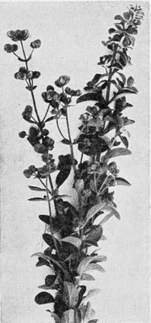

Marjoram
Description
This section is from the book "Culinary Herbs", by M. G. Kains. Also available from Amazon: Culinary Herbs, Their Cultivation, Harvesting, Curing and Uses.
Marjoram
Two species of marjoram now grown for culinary purposes (several others were formerly popular) are members of the Labiatae or mint family-pot or perennial marjoram (Origanum vulgare, Linn.) and sweet or annual (O. Marjorana). Really, both plants are perennials, but sweet marjoram, because of its liability to be killed by frost, is so commonly cultivated in cold countries as an annual that it has acquired this name, which readily distinguishes it from its hardy relative. Perennial marjoram is a native of Europe, but has become naturalized in many cool and even cold temperate climates. It is often found wild in the Atlantic states in the borders of woods.
The general name origanum, meaning delight of the mountain, is derived from two Greek words, oros, mountain; and ganos, joy, some of the species being found commonly upon mountain sides. Under cultivation it has developed a few varieties the most popular of which are a variegated form used for ornamental purposes, and a dwarf variety noted for its ability to come true to seed. Both varieties are used in cookery. The perennial species seems to have had the longer association with civilization; at least it is the one identified in the writings of Pliny, Albertus Magnus and the English herbalists of the middle ages. Annual marjoram is thought to be the species considered sacred in India to Vishnu and Siva.
Sweet Marjoram
Description
Perennial marjoram rises even 2 feet high, in branchy clumps, bears numerous short-stemmed, ovate leaves about 1 inch long, and terminal clusters or short spikes of little, pale lilac or pink blossoms and purple bracts. The oval, brown seeds are very minute. They are, however, heavy for their size, since a quart of them weighs about 24 ounces. I am told that an ounce contains more than 340,000, and would rather believe than be forced to prove it.
Annual marjoram is much more erect, more bushlike, has smaller, narrower leaves, whiter flowers, green bracts and larger, but lighter seeds-only 113,000 to the ounce and only 20 ounces to the quart!
Cultivation
Perennial marjoram when once established may be readily propagated by cuttings, division or layers, but it is so easy to grow from seed that this method is usually employed. There is little danger of its becoming a weed, because the seedlings are easily destroyed while small. The seed should be sown during March or April in flats or beds that can be protected from rain. It is merely dusted on the surface, the soil being pressed down slightly with a board or a brick. Until the seedlings appear, the bed should be shaded to check evaporation. When the plants are 2 or 3 inches tall they may be transplanted to the places where they are to remain, as they are not so easy to transplant as lettuce and geraniums. The work should be done while the plants are very small, and larger numbers should be set than will ultimately be allowed to grow. I have had no difficulty in transplanting, but some people who have had prefer to sow the seed where the plants are to stand.
If to be used for edging, the dwarf plants may be set 3 or 6 inches apart; the larger kinds require a foot or 15 inches in which to develop. In field cultivation the greater distance is the more desirable. From the very start the plants must be kept free from weeds and the soil loose and open. Handwork is essential until they become established. The plants will last for years.
Annual marjoram is managed in the same kind of way as to seeding and cultivation; but as the plant is tender, fresh sowings must be made annually. To be sure, plants may be taken up in the fall and used for making cuttings or layers towards spring for the following season's beds. As annual marjoram is somewhat smaller than the perennial kind (except the dwarf perennial variety), the distances may be somewhat less, say 9 or 10 inches. Annual marjoram is a quick-growing plant-so quick, in fact, that leaves may be secured within six or eight weeks of sowing. The flowers appear in 10 to 12 weeks, and the seed ripens soon after.
When it is desired to cure the leaves for winter use, the stems should be cut just as the flowers begin to appear, and dried in the usual manner. If seed is wanted, they should be cut soon after the flowers fall or even before all have fallen-when the scales around the seeds begin to look as if drying. The cut stems must be dried on sheets of very fine weave, to prevent loss of seed. When the leaves are thoroughly dry they must be thrashed and rubbed before being placed in sieves, first of coarse, and then of finer mesh.
Uses
The leaves and the flower and tender stem tips of both species have a pleasant odor, and are used for seasoning soups, stews, dressings and sauces. They are specially favored in France and Italy, but are popular also in England and America. In France marjoram is cultivated commercially for its oil, a thin, light yellow or greenish liquid, with the concentrated odor of marjoram and peppermint. It has a warm, and slightly bitter taste. About 200 pounds of stems and leaves are needed to get a pound of oil. Some distillation is done in England, where 70 pounds of the plant yield about one ounce of oil. This oil is used for perfuming toilet articles, especially soap, but is perhaps less popular than the essential oil of thyme.
Continue to:
- prev: Marigold
- Table of Contents
- next: Mint